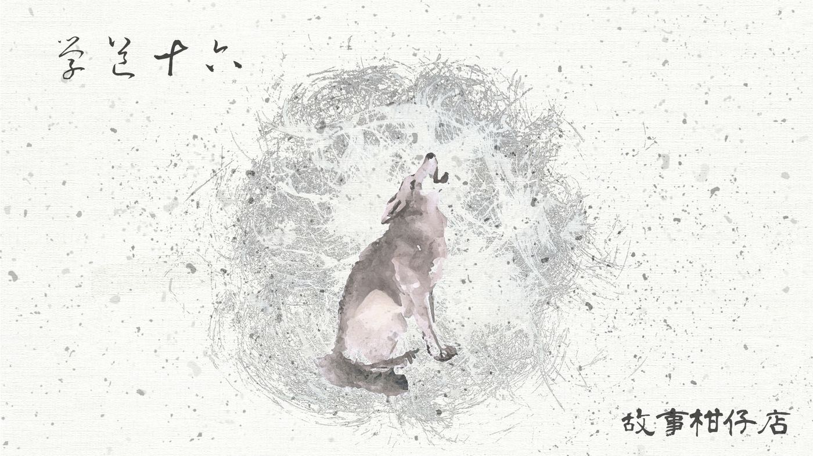
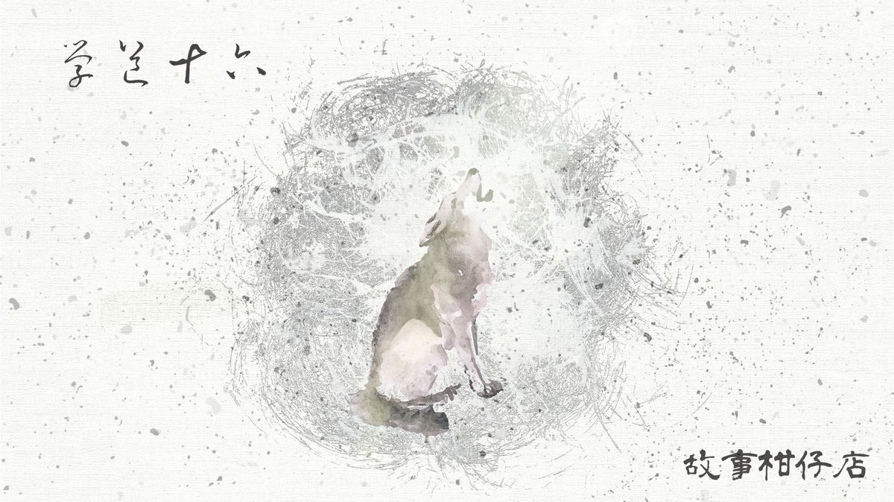

玄墨行者．學道（十六）：葬

剛下過雨的山林，空氣特別清朗。
遠方的雲都給雨沖散了，絲絲的，在天空拉起一條條連不起來的白繩。
孤峰頂巔，似乎更清涼些，吸進鼻腔的空氣都彷彿夾著冰絲。
這該算是好天氣嗎？姑且是吧。
山林中的鳥及鷹，是通風報信最不藏私的生物了，正有一群鳥撲翅飛來。
有一隻特別大的，嘴喙內勾，像一種機巧的武器。他自樹頂俯衝下來，瞄準，猛力啄，串走天璣的左邊眼珠，又振翅飛走。
天璣躺著與睡著沒兩樣，玄墨一門除了蒙叟全到齊了，站在不遠處的樹下，看另一隻鷹啃掉剩餘的一邊眼珠。一群鳥兒佔領了天璣的肚腹，嘰嘰喳喳啄食起來。
原來那樣瘦的人，還能餵飽這麼多鳥。也許再晚一點，便要成為蒼蠅孵卵的溫床。
鳥群嘴喙太利了些吧，大曲微微撇過頭去。他對三師叔沒有成見，相反地，他其實挺喜歡天璣。大曲的視線恰好落在天樞側面，發現師父似乎又消瘦了幾分。
玄墨一門就這麼靜靜陪著。瑤光點起一炷清香，願天璣隨煙霧還返天地八方。
這是規矩，墨者薄葬，玄墨門人只要有弟子離世，亡者以天為被，以地為床，肉身消隕，還諸乾坤。
虹月暗地裡扶著玉衡的臂，指尖傳來極輕微的瑟縮。玉衡不是沒見過此等場面，只是躺在那裡的人是天璣，她難免希望鳥群嘴下留情。
拾兒孤零零地站在最靠近天璣的岩石上，穿著天璣生前慣穿的苔色長袍。他不看師父，只是遙望遍地群峰，風起，長袍飛揚。
其實師父早有預感吧？
打從拾兒刺了徽，入了門，一向隨意的天璣，這三個月來突然加緊了腳步，訓練他的體術及武術，帶他去鎖妖庫看看那些妖物，尤其盯著他，把所有收妖琴譜彈個滾瓜爛熟。嚴格精實的程度，連玉衡都叮囑著別累壞了拾兒。
某一天晚飯後，大夥各自進廂房休息了，天璣卻拖著拾兒到林中湖，「月色正好，陪為師釣場魚吧。」
綁好了線，天璣卻不釣，反而端起醉妖弦彈奏起來。
他手指飛舞，一曲嘈嘈切切，一曲大珠小珠落玉盤，一曲登高望遠不勝寒，一曲邀月對影成三人。湖面漣漪圈圈，月色粼粼。
「師父，您要鬥琴哪？」拾兒玩笑說著。
天璣倏地按住琴弦，樂音嘎然而止。「你已正式成了玄墨傳人，別一天到晚想著鬥。太多事，鬥不過。」
「開開玩笑嘛！」拾兒耍賴，摸摸左頸刺青。打從入門以來，他便常常下意識去摸。
天璣閉起眼，放柔手腕，細瘦指尖勾了下琴弦，那一聲，像划開了時間之流，直往黑暗的樹林去。
弦音如叨叨絮語，那麼遠又那麼近，與其說是收妖，更像是亟欲對誰說的話，有急有緩，愁怖如織，卻也天寬地闊任逍遙。
那是他沒見過的師父，拾兒在這天晚上，聽見了前所未聞，卻也一輩子放在心裡的一首歌。
當然，又是空手而歸。天璣是最愛護湖裡魚的人。
撐著沈重眼皮回到廂房，拾兒本想速速和衣睡了，沒想到天璣繞過隔間，跑來坐在床前，戳戳拾兒的腦袋，說：「你正式入門也滿三個月了，有沒有什麼問題？為師都可為你解答。」
「我想睡覺啦！」拾兒正想翻倒下去，卻被天璣攔截，身子給扶正起來。
「師父跟你談天呢，淨想著睡覺。」天璣故意繃著臉，「以後沒得問別後悔。」
「等我想到再問嘛。」
「不成。就今晚。今晚為師有興致。」
天璣難得的任性起來，拾兒只好想了想，想不到什麼重要問題，隨口問：「當初罰抄《玄墨宗譜》，有首詩給蟲蛀浸水了看不清，究竟寫著啥？」
天璣一笑，鬚長鬍子飄飄然，他兀自吟詠：「萬念神人妖鬼銜，死生成序似有弦；視海觀天察如相，鯤造玄機道方還。」
拾兒一臉懵懂，嘴上打發著說：「謝師父，我知道了，晚安！」不到幾秒，鼾聲大作。
朦朧間好像看到虹月正背對著沖涼，背脊光潔如玉，曲線小小起伏，十分無邪。拾兒按耐不住，基於某種慾望或好奇，他偷偷摸摸前進幾步，想看清楚些。
挽起頭髮的虹月突然轉過頭來，竟長著天璣八字鬍的臉！
拾兒猛然嚇醒，又被床邊伸長脖子盯著他看的天璣嚇了更大一跳。
「做惡夢？」天璣問。
「啊？嗯，對啊。」總不好說夢到師父您吧。拾兒想。「師父，您不睡覺在幹嘛？」
「喔。方才忘了告訴你，以後我不在身邊時，你若有疑問，就去翻我床邊的箱子，裏頭的東西都是給你的。」
說完這麼不著邊際的一句話，天璣便繞過隔間回到自己的床，拾兒沒作他想，抱著棉被又倒下了，這回應該是夢不到虹月了吧。
但拾兒作夢也沒想到的是，這竟是最後一次見到師父天璣皺眉的臉。
－－－－－
#新連載依舊兩天一篇每晚準時六點半喔
#請人客多多指教
#記得去各大書店買我們的書故事柑仔店哩

